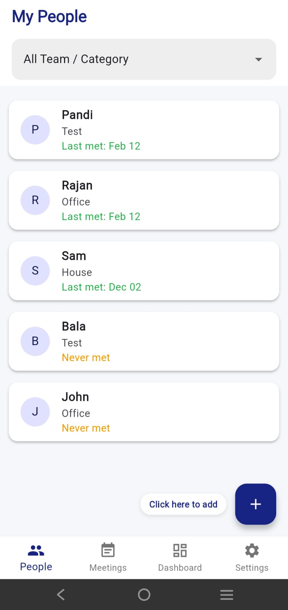

Centralized Meeting Logs
Quickly record summaries, dates, and key takeaways for every interaction.
About One On One Tracker
Are you struggling to remember what was discussed in your last 1-on-1? Do important follow-up items fall through the cracks?
One on One Tracker is the ultimate tool for managers, mentors, and professionals who want to build stronger, more organized relationships.
Free to download · one-time Lifetime Pro upgrade · iPhone and Android


Quickly record summaries, dates, and key takeaways for every interaction.
Keep a dedicated profile for every contact, including their role, team, and history.
Track pending action items and notes to ensure your commitments are always met.
Find any past conversation in seconds with powerful keyword search and name filters.
Visualize your interaction volume and identify "dormant" connections that need your attention.
As a professional tool, we treat your data with the highest level of respect.
Your meeting notes and contact details are stored locally on your device database.
Use your personal Google Drive account to create encrypted backups. We never see your data; it stays entirely within your own Google ecosystem.
We do not sell or share your data with advertisers or third parties.
Get the most out of your professional tracking with a one-time purchase. No subscriptions, just results.
Seamlessly backup and restore your data across devices.
Log as many meetings and contacts as your career requires.
Help us continue building features that make your professional life easier.
Download One on One Tracker today and turn your meetings into meaningful progress.
On your device. If you turn on Google Drive backup, a private backup file is kept in your own Google Drive.
Only a private app-data folder. The app cannot see any other files in your Google Drive.
No. The app is free, with an optional one-time Lifetime Pro purchase.
Delete records or clear local data in the app settings. To delete your account and data from our systems, use the request form in the privacy policy.
More: One On One Tracker overview · Support · Privacy policy